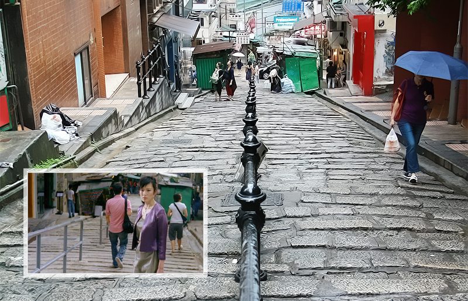
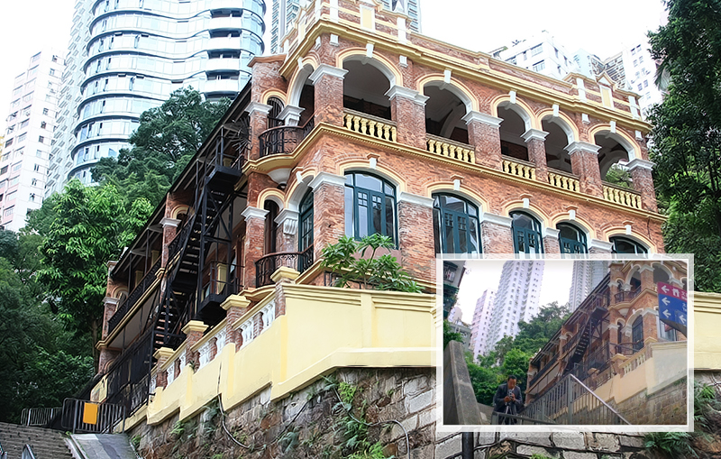
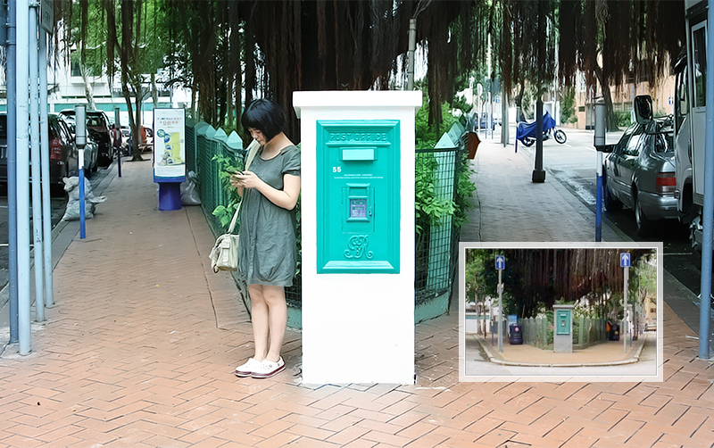
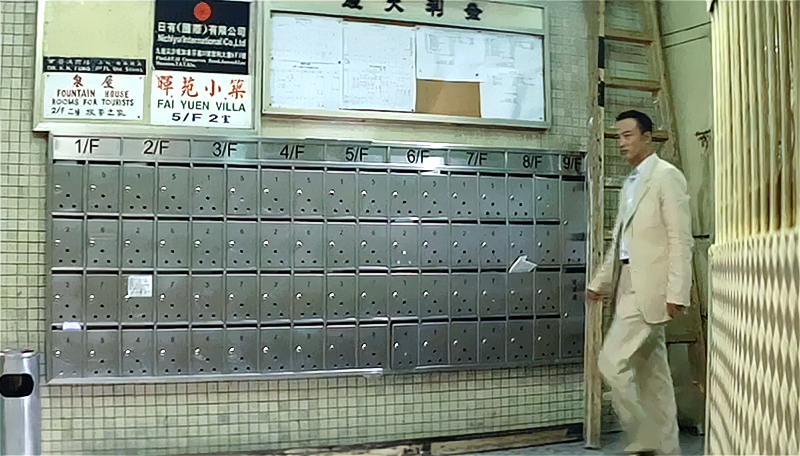

砵典乍街：石板铺成的砵典乍街在很多港片中都出现过，也是《文雀》里的任达华第一次邂逅林熙蕾的地方。林小姐当时的惊艳回头，谋杀了不少任达华的底片。《无间道》里梁朝伟也走过这里，《跟踪》里山哥遇见警察问话的地方也是这条街。相比电影，石板街更换了更为好看的栏杆扶手，中间的一侧还有供人休息的台子，可惜忘了确认一下休息台背后是否有电影里的那条小路。

医学博物馆：离磅巷不远的香港医学博物馆，《文雀》里任达华当时正在这里拍照，突然偶遇乔装成林熙蕾的打手，被骗进小巷打残了手，所谓红颜祸水。

又一村：又一村的这个邮筒位于有些隐秘的街区。穿过界限街的大坑东游乐场拐到一条安静的马路，沿石阶而上来到一片全是低层独栋小楼的小区，一直走到坡道尽头的岔路口，就看到这个非常显眼的邮筒，背后是棵大榕树。整个街区非常安静，偶尔会有几个路人和几辆小车开过。《文雀》里四人会把偷来的钱包扔进这个邮筒。

发利大厦：我们在香港的住宿选在尖沙咀，发利大厦9层的一个青年旅店。大厦底楼在装修，停单数层的电梯也在维修，每天我们只能坐电梯到8楼，然后从楼梯间走上9层。我一直觉得发利大厦这个名字有点似曾相识，但也没当回事，因为走在香港大街小巷，很多街名都会让你有似曾相似的感觉。直到回来重温《文雀》时才惊喜发现，任达华住的那栋楼就是发利大厦，原来大家住在同一幢。发利大厦是此次行程唯一没有提前安排的地方，这样的偶遇，也算是跟《文雀》的缘分了。